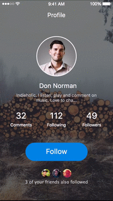

Inspr
Press Kit
Contact
Design apps
on the phone
From mockup to prototype, easy and for everyone.
Download Now!
Tweet
How it works
Just a few steps
1. Craft your app screens on Inspr
Inspr
Easiest way to craft app
mockups on your phone
2. Turn them into an interactive
prototype on POP 
POP
Import mockups and build your app prototype in minutes
3. Wow your friends!